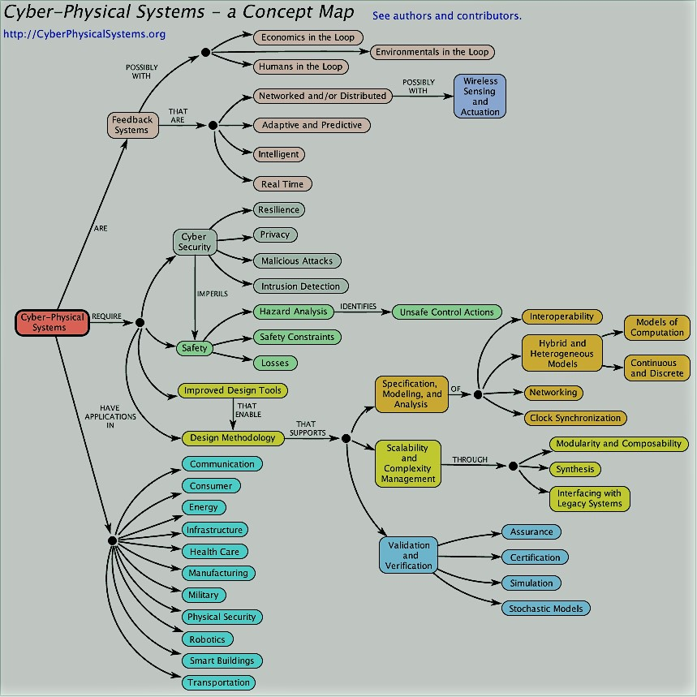

|

____________________
| |
| Let's save |
| the |
| Polar Bears |
|____________________|
(\__/) ||
(•ㅅ•) ||
/ づ
|
A cyber-physical system (CPS) is a computer system in which a mechanism is controlled or monitored by computer-based algorithms. In cyber-physical systems, physical and software components are deeply intertwined, able to operate on different spatial and temporal scales, exhibit multiple and distinct behavioral modalities, and interact with each other in ways that change with context.CPS involves transdisciplinary approaches, merging theory of cybernetics, mechatronics, design and process science.The process control is often referred to as embedded systems. In embedded systems, the emphasis tends to be more on the computational elements, and less on an intense link between the computational and physical elements. CPS is also similar to the Internet of Things (IoT), sharing the same basic architecture; nevertheless, CPS presents a higher combination and coordination between physical and computational elements. Examples of CPS include smart grid, autonomous automobile systems, medical monitoring, industrial control systems, robotics systems, and automatic pilot avionics.Precursors of cyber-physical systems can be found in areas as diverse as aerospace, automotive, chemical processes, civil infrastructure, energy, healthcare, manufacturing, transportation, entertainment, and consumer appliances. |
The decarbonisation of energy provision is key to managing global greenhouse gas emissions and hence mitigating climate change. Digital technologies such as big data, machine learning, and the Internet of Things are receiving more and more attention as they can aid the decarbonisation process while requiring limited investments. The orchestration of these novel technologies, so-called cyber-physical systems (CPS), provides further, synergetic effects that increase efficiency of energy provision and industrial production, thereby optimising economic feasibility and environmental impact.
This comprehensive review article assesses the current as well as the potential impact of digital technologies within CPS on the decarbonisation of energy systems. Ad hoc calculation for selected applications of CPS and its subsystems estimates not only the economic impact but also the emission reduction potential. This assessment clearly shows that digitalisation of energy systems using CPS completely alters the marginal abatement cost curve (MACC) and creates novel pathways for the transition to a low-carbon energy system. Moreover, the assessment concludes that when CPS are combined with artificial intelligence (AI), decarbonisation could potentially progress at an unforeseeable pace while introducing unpredictable and potentially existential risks. Therefore, the impact of intelligent CPS on systemic resilience and energy security is discussed and policy recommendations are deducted. The assessment shows that the potential benefits clearly outweigh the latent risks as long as these are managed by policy makers.